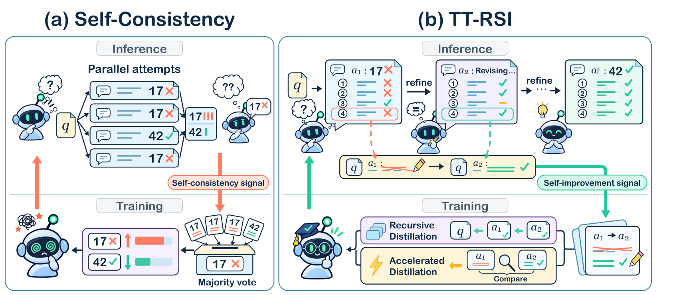
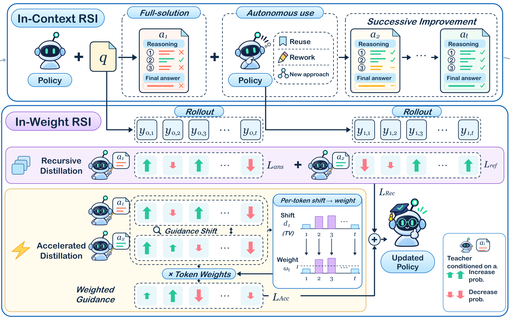

LLMs that build on their own previous attempts instead of voting over independent ones — in context at inference, and in their weights during test-time training.
At test time a model must judge its own answers on unlabeled questions. Most current methods resolve this with self-consistency: sample independent solutions and take the majority. That wastes earlier reasoning at inference, and when the majority is wrong, training on it reinforces the error — so improvement stalls instead of accumulating.

The core is an improvement step: re-solve the question with the previous solution in context. Only the latest solution is carried forward, so attempts form a Markov chain \(a_1 \to a_2 \to \cdots \to a_\ell\). Because later solutions improve on earlier ones, they can also supervise them — and that is what training uses.

Each attempt receives the full previous solution — derivation and answer — presented neutrally as “a previous attempt”, with no hint whether it is correct. The model decides what to reuse, rework, or solve anew, so even a wrong solution contributes reusable steps.
{question} A previous attempt at solving this problem was: {previous solution} Please solve the problem independently. Reason step by step, and put your final answer within \boxed{}.
The first two solutions of the chain \(a_1, a_2\) become privileged references for on-policy self-distillation. The teacher sees one step ahead:
Accelerated Distillation adds the \(a_2\)-conditioned teacher on the first attempt, up-weighting tokens where refinement shifted its guidance:
The updated model answers better and refines better, producing stronger references for the next round.
Each refinement fixes a wrong answer with probability \(f\) and breaks a correct one with probability \(b\); distillation is a one-step bootstrap. Drag the sliders to see what each implies.
Qwen3-1.7B, 4B and 8B on five competition-math benchmarks (AIME 2025/2026, HMMT Feb 2025/2026, BRUMO 2025), against five label-free test-time training methods. Labels are used only for evaluation.
TT-RSI applies In-Context RSI (one initial solution + ten refinements) to the In-Weight RSI model; TTPO + SC uses self-consistency on the TTPO model with the same token budget.
On the six AIME26 questions whose Base majority is wrong, several self-consistency methods fall below Base. In-Weight RSI more than doubles accuracy on them, and its majority vote becomes correct on 2 of the 6 (others: at most 1).
Tracking first-attempt accuracy over 100 updates, In-Weight RSI climbs throughout to 59.61% (+5.77% over Base), while the baselines stay near — or dip below — where they started.
Also in the paper: design ablations (§4.3), cross-benchmark transfer (§4.4), training cost (8.53 min/update, 2.29–5.36× faster than baselines), and the balance-point theory (§3.2, App. A).
An HMMT26 problem. Self-consistency picks a wrong most-frequent answer; the base model's refinement chain gets there after ten steps; after In-Weight RSI, the chain gets there at \(a_2\). Blue marks reasoning revisions.
“average of the lengths of all sticks divided by 2”
\(E(n+1) = \dfrac{1}{2(n+1)} \;\Longrightarrow\; \dfrac{1}{10}\)
Correct — after ten refinements.
Correct at \(a_2\) instead of \(a_{11}\).
@article{wu2026ttrsi,
title = {Beyond Self-Consistency: Recursive Self-Improvement at Test Time},
author = {Wu, Jianyu and Wang, Yizhou and Su, Encheng and Zhang, Jinouwen and
Li, Pengze and Wang, Lintao and Tang, Chen and Wang, Aoran and
Ouyang, Wanli and Tang, Shixiang},
journal = {arXiv preprint arXiv:2611.30965},
year = {2026}
}